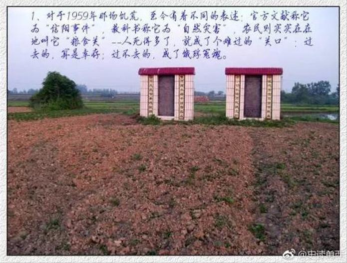

|
回目录 回主页 |
河南省信阳专区光山县十里（原城郊）公社高大店大队吴围子小队的吴晔兴和他父亲吴永宽一起，搜集整理了一份本村饿死人的名单。他说：“我的良心驱使我花了一些钱，委托村里的人，在2004年清明节为那些冤死的人（包括我的爷爷）立下两块纪念碑。我也请求父亲回忆并写下当时的情况。我想为这段最黑暗、最苦难的历史，做一点点见证。”

以下是铭刻在纪念碑上的碑文和饿死者的名单：
吴围子小队大饥荒纪念碑 碑文 一九五九年我刚满十五岁，回忆起那段日子真是让我悲伤、恐惧，让我叙不完的苦。那个时期中央提出三面红旗，总路线、人民公社、大跃进，来建设社会主义，可是万万没想到的是不仅没有建设好社会主义，而是让浮夸风把形势搞得一团糟。从上而下都空喊口号，让喊得厉害，会说大话，浮夸风刮的越来越大的，成了大红人了。那时还搞反右斗争，反瞒产、反私分，如果你只要说实话就给你戴上大帽子，说你是右派分子，右倾机会主义分子，那就斗你，打你，架飞机，甚至把你用绳子捆上吊起来，直到让你低头认罪，否则活活打死你。 例如：我队里的吴德荣说：“粮食这么多，为什么不给社员吃。”就这一句话，被斗、被打几天几夜，直到斗死为止。有个叫吴德桐的社员骂了一句，队长吴永寿就找来几个人，把他活活的打死。副队长吴永冠说了句大跃进把人害得厉害，当时大队开会将他打死在离大队办公室不远的地方。我父亲吴德金是生产队会计，他为人朴实，善良，他说打这么多粮食为啥不给社员吃，真有点亏良心，后来遭到队长吴永寿批斗，直到连气带饿于十一月三日下午五时离开人世。 我那时很需要父母养护，可失去了亲爱的父亲，让我无法上学，连病都无法治疗，让我痛苦一生。一九五九年我们生产队同历年比，算是个丰收年，夏季小麦就收一万二千斤。豆子三千五百斤，说把国家任务完成后再提留，实际上一点粮食也没有了。从那个时候就开始，天天开会斗人，不交粮，就要交人，整天大队办公室成了打人的办公室了。 人人都恐慌起来了，没有粮食吃，都到外边找野菜野草和刮树皮吃，到了最后野菜也没有了，树皮也刮光了，后来就磨起糠渣子度日子吃，之后还拉不出大便来，就这样把人连饿带折磨，每天都死去了几个人；有的小孩死了，被大人把小孩的肉煮着吃，吃了小孩的肉人又得黄肿病，就这样不到半个月的时间，有一百二十人的小村庄，就死去了七十多人。 这些惨剧现在回想起来确实是中共中央批斗右派太过头了，从上而下，治理国家不是实实在在从源头做起，而是利用反右派，浮夸风这样一些方式，给人扣帽子，压得人们抬不起头来，让部分坏人占了上风，使很多人失去了生命。以上这些惨剧是我亲身所见，望天下人记住这段历史，让历史不再重演。 吴永宽，二○○四年四月 一九五九年河南省光山县十里（原城郊）公社高大店大队吴围子小队一百二十人中共有七十二人饿死。 死者姓名 性别 现家属姓名 死者与家属关系 1 李兴奎 男 李傅如 祖父 2 吴德勤 男 吴永富吴永炳 父亲 3 吴永厚 男 吴向发 父亲 4 吴根林 男 吴向发 弟弟 5 吴二毛 女 吴向发 妹妹 6 吴德荣 男 吴向能 祖父 7 吴德金 男 吴永宽 父亲 8 吴德才 男 吴永宽 三叔 9 吴老友 男 吴永金 三弟 10 余才运 男 余思礼 祖父 11 余黄氏 女 余思礼 祖母 12 余敦山 男 余思礼 父亲 13 余思义 男 余思礼 二哥 14 余思信 男 余思礼 弟弟 15 吴冯氏 女 吴向明 祖母 16 吴永应 男 吴向明 父亲 17 吴小油 女 吴向明 妹妹 18 吴二孩 男 吴向明 弟弟 19 吴三孩 男 吴向明 弟弟 20 李成奎 男 李福寿 父亲 21 李王氏 女 李福寿 母亲 22 吴德润 男 吴永明 父亲 23 吴德桐 男 吴永明 二叔 24 吴永冠 男 吴永明 大哥 25 吴少山 男 吴桂霞 祖父 26 吴德炳 男 吴向军 祖父 27 冯长友 男 绝户 28 冯小二 女 绝户 29 冯云毛 女 绝户 30 杨世英 女 绝户 31 吴永昌 男 绝户 32 潘秀英 女 绝户 33 吴小成 男 绝户 34 吴二毛 女 绝户 35 吴德立 男 绝户 36 吴永恩 男 绝户 37 吴德刚 男 绝户 38 徐乃兴 男 绝户 39 徐乃昭 男 绝户 40 徐之太 男 绝户 41 余敦海 男 绝户 42 余陈氏 女 绝户 43 余小富 男 绝户 44 余自明 男 绝户 45 王福汉 男 绝户 46 李明奎 男 绝户 47 李福喜 男 绝户 48 李刘氏 女 绝户 49 李小毛 男 绝户 50 徐安义 男 绝户 51 徐小照 男 绝户 52 吴永清 男 绝户 53 吴小成 男 绝户 54 吴二娌 女 绝户 55 吴大孩 男 绝户 56 吴云毛 女 绝户 57 陈友来 男 绝户 58 陈刘氏 女 绝户 59 吴松山 男 绝户 60 吴华厚 男 绝户 61 吴王氏 女 绝户 62 徐乃珍 女 绝户 63 吴小油 女 绝户 64 吴舍毛 女 绝户 65 吴四毛 女 绝户 66 吴向山 男 绝户 67 吴桂氏 女 绝户 68 吴永才 男 绝户 69 吴王氏 女 绝户 70 吴永堂 男 绝户 71 吴马氏 女 绝户 72 吴向成 男 绝户 合计72人，分别在1959年农历十月、十一月死去。 |
回目录 回主页 |